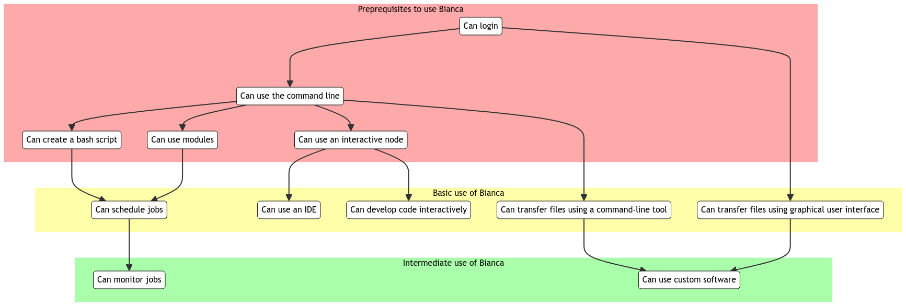
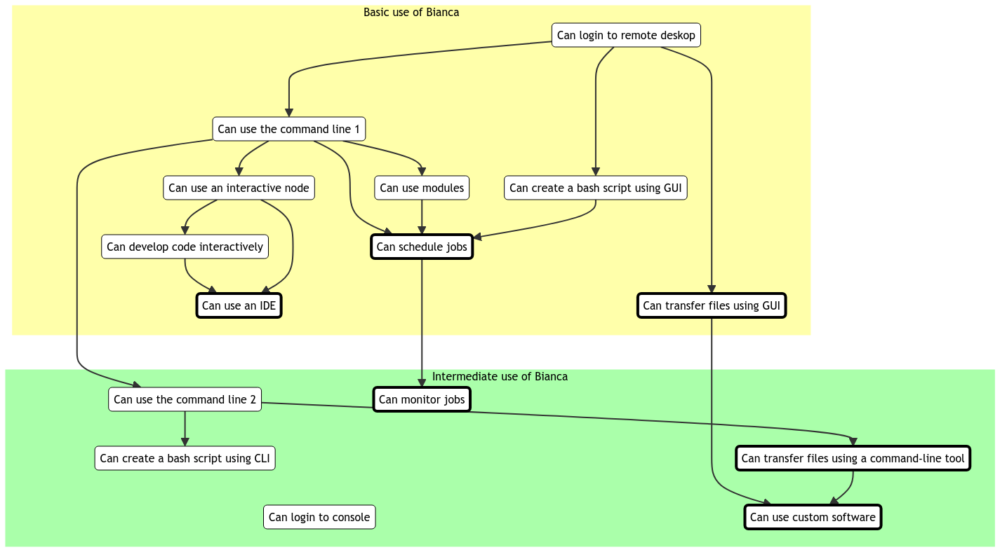

Reflection 2023-12-14¶
- Bianca In-Depth Hackathon
- Richel
- Lesson plan
Thursday 14th Dec 2023 was the first time we ran the 'Bianca In-Depth Hackathon' course, with the idea of that day being suitable for experience users, as we moved the beginner things to the 'Intro to Bianca' course.
This was the course schedule:
| Time | Topic |
|---|---|
| 9.00 | B: Introduction |
| 9.10 | L: NAISS-SENS summary |
| 9.20 | P: Transferring files to and from Bianca |
| 10.00 | Coffee break |
| 10.15 | P: Transferring files p2 |
| 10.35 | D: Slurm jobs p1 |
| 11.00 | Break |
| 11.15 | D: Slurm jobs p2 |
| 12.00 | LUNCH |
| 13.00 | B: Software and packages installation |
| 13.50 | break |
| 14.05 | R: IDE:s on Bianca |
| 15.00 | Coffee break |
| 15.15 | B: [Summary |
| 15.20 | B: Q/A and extra material |
| 15.55 | B: Closing words |
| 16.00 | END |
I would teach together with Pavlin from 14:05-15:00 about IDEs.
Goal of my preparation was:
- to improve and use the online course materials, as which is used by the others too.
- to find out how to run RStudio and VSCodium on Bianca
I achieved those goals.
I attended the whole day to follow along with the students and help them enjoy the course better by interjecting a rare and -hopefully!- helpful questions/comment sometimes when a colleague was teaching.
The schedule was intended to be flexible and hence was I. Due to this, we started at 14:30.
I gave a 5 minute short monologue to IDEs after which I distributed the learners: Pavlin would have a break-out room on the Jupyter IDE, I would have one for RStudio. Due to an earlier poll at the start of the day, I knew these were the two major IDEs, hence showing VSCodium was not needed. Additionally, showing VSCodium was not needed as (1) it is even simpler than RStudio, and (2) I made a YouTube video about it.
I am happy I distributed the learners: in my breakout room (I had a colleague 'hold the fort' in the main Zoom room) I had around six learners and I could have a short individual chat with them (I think 2 mins in total), after which I showed the course material and skipped through the YouTube video. I asked the learners for questions. One learner asked about using an interactive node: he never did that, as he was the only one in a project. With no questions left, I let the learners start RStudio on Bianca.
After a couple of minutes, the learners found out that one couldn't login to the remote desktop. While sharing my screen, I shared this with the sysadmins. We discovered together that one could not log in, as someone was using the remote desktop node without using an interactive node (just like the learner I had!). I asked my learners if they were confident they could start RStudio on Bianca and the one learner with a camera claimed she was confident.
At 15:05 we were done. We went to the general room for a general chat until Pavlin was ready. I encouraged the learners to look at Pavlins demo of Jupyter or stick around for a chat. I chatted with around 3 students until, around 15:15, Pavlins group returned and we had a coffee break.
I think my teaching went well:
- (1) there was plenty of time for exercises,
- (2) I responded well to changes in schedule and breakdown of Bianca,
- (3) I had enough course material in place to allow a good response,
- (4) I had some real contact with some of the learners.
While preparing the course material, I did more than just that:
- I added a section on transferring files using a GUI
- I made an overview of the course material and prerequisites
I added a section on transferring files using a GUI, which is part of the 'Intro to Bianca' course. I added this section, as I felt this current section on file transfer was unsuitable for an Intro course. I needed a section about file transfer for beginners, as, in my course materials, I refer to earlier sections.
I made an overview of the course material and prerequisites, as it helps me and colleagues decide on the order of topics, as well as what should be in either (i.e. basic or intermediate) course:

While writing this reflection, I changed it again:

I conclude that the intro course can have a minimal use of the terminal:
only chmod +x (if the GUI cannot do this) and sbatch are really needed.
My answer to 'What is the goal of the intro course?' would be:
The goals of the introduction course is to allow a learner to use Bianca
As most learners are most familiar with graphical user interfaces (i.e. not a terminal), we should use graphical user interfaces.
Or the teaching goals of the introduction course:
- A learner can transfer a file
- A learner can modify and run code
- A learner can schedule a script
Also here, use of the terminal should only be what is essential.
My answer to 'What is the goal of the intermediate course?' would be:
The goals of the intermediate course is to allow a learner to use Bianca more conveniently and/or efficiently
Or the teaching goals of the intermediate course:
- A learner can run a job efficiently
- A learner can install custom software
I hence think the introduction course can/should be simplified. These things need to be discussed with the team.
2023-12-19 Meeting¶
After a meeting on 2023-12-19, it was decided to:
In Intro course:
- Do file management in command-line, instead of using a graphical file explorer
- No IDE (unsure where this will go)
- Use rsync for file transfer, instead of using FileZilla for file transfer
Resulting in the following structure:
%% Direction is top->down
flowchart TD
%% Give a white background, instead of a transparent one
classDef node fill:#fff,color:#000,stroke:#000
classDef focus_node fill:#fff,color:#000,stroke:#000,stroke-width:4px
subgraph sub_basic_use["Basic use of Bianca"]
can_login_to_remove_desktop(Can login to remote deskop)
can_login_to_console(Can login to console)
can_use_command_line_1(Can use the command line 1)
can_use_modules(Can use modules)
can_use_interactive_node(Can use an interactive node):::focus_node
can_manage_files_using_cli(Can manage files using CLI)
can_tranfer_files_using_rsync(Can transfer files using rsync):::focus_node
can_schedule_jobs(Can schedule jobs):::focus_node
can_create_bash_script_using_cli(Can create a bash script using CLI)
end
style sub_basic_use fill:#faa,color:#000,stroke:#faa
subgraph sub_intermediate_use["Intermediate use of Bianca"]
can_use_command_line_2(Can use the command line 2)
can_use_custom_software(Can use custom software):::focus_node
can_monitor_jobs(Can monitor jobs):::focus_node
can_use_ide(Can use an IDE)
end
style sub_intermediate_use fill:#Ffa,color:#000,stroke:#ffa
subgraph sub_non_goal["Not in course"]
can_tranfer_files_using_gui(Can transfer files using GUI)
can_create_bash_script_using_gui(Can create a bash script using GUI)
end
style sub_non_goal fill:#fff,color:#000,stroke:#fff
%% Basic
can_login_to_console --> can_tranfer_files_using_rsync
can_login_to_console --> can_use_command_line_1
can_login_to_remove_desktop ---> can_use_command_line_1
can_use_command_line_1 --> can_use_modules
can_use_command_line_1 --> can_use_interactive_node
can_use_command_line_1 --> can_use_command_line_2
can_use_command_line_1 --> can_create_bash_script_using_cli
can_use_command_line_1 --> can_schedule_jobs
can_use_command_line_1 --> can_manage_files_using_cli
can_use_command_line_1 --> can_tranfer_files_using_rsync
can_use_modules --> can_schedule_jobs
can_create_bash_script_using_cli --> can_schedule_jobs
%% Basic -> Intermediate
can_schedule_jobs --> can_monitor_jobs
can_use_interactive_node --> can_use_ide
can_use_modules --> can_use_ide
%% Make sure Intermediate is below Basic,
%% using invisible nodes
can_schedule_jobs ~~~ can_use_command_line_2
%% Intermediate
can_use_command_line_2 --> can_use_custom_software
%% Basic -> None
%% can_login_to_remove_desktop ---> can_tranfer_files_using_gui
%% can_tranfer_files_using_gui --> can_use_custom_software
%% can_login_to_remove_desktop ---> can_create_bash_script_using_gui
%% can_create_bash_script_using_gui --> can_schedule_jobs
%% Make sure Non-goals is below Intermediate,
%% using invisible nodes
can_use_custom_software ~~~ can_tranfer_files_using_gui